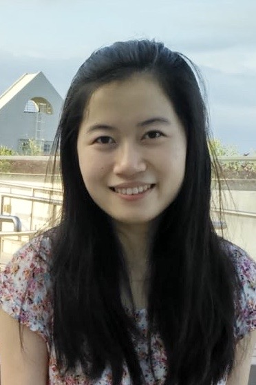

|  |
|
I will join the Cheriton School of Computer Science as an Assistant Professor at the Univeristy of Waterloo. I am looking for PhD and MSc students who are interested in algorithm and complexity of database theory. If you are interested, please send me an email and select me as a potential supervisor in your application.
My research interests are database theory and its applications to practical database systems, spanning over massively parallel query processing, dynamic query processing, oblivious query processing, and machine learning in query optimization.
Badih Ghazi, Xiao Hu, Ravi Kumar and Pasin Manurangsi. “Differentially Private Data Release over Multiple Tables.” ACM Symposium on Principles of Database Systems (PODS), June 2023.
Xiao Hu and Qichen Wang. “Computing the Difference of Conjunctive Queries Efficiently”, ACM SIGMOD International Conference on Management of Data (SIGMOD), June 2023.
Qichen Wang, Xiao Hu, Binyang Dai and Ke Yi. “Change Propagations Without Joins”, International Conference on Very Large Data Bases (VLDB), August 2023. [pdf]
Shaleen Deep, Xiao Hu and Paraschos Koutris. “Ranked Enumeration of Join Queries with Projections.” International Conference on Very Large Data Bases (VLDB), September 2022. [pdf]
Xiao Hu, Yuxi Liu, Haibo Xiu, Pankaj K. Agarwal, Debmalya Panigrahi, Sudeepa Roy, and Jun Yang. “Selectivity Functions of Range Queries are Learnable.” ACM SIGMOD International Conference on Management of Data (SIGMOD), June 2022. [pdf]
Xiao Hu, Stavros Sintos, Junyang Gao, Pankaj K. Agarwal, and Jun Yang. “Computing Complex Temporal Join Queries Efficiently.” ACM SIGMOD International Conference on Management of Data (SIGMOD), June 2022. [pdf]
Xiao Hu, Shouzhuo Sun, Shweta Patwa, Debmalya Panigrahi and Sudeepa Roy. “Aggregated Deletion Propagation for Counting Conjunctive Query Answers.” International Conference on Very Large Data Bases (VLDB), August 2021. [pdf][full version]
Pankaj K. Agarwal, Xiao Hu, Stavros Sintos, and Jun Yang. “Dynamic Enumeration of Similarity Joins.” International Colloquium on Automata, Languages and Programming (ICALP), July 2021. [pdf][full version]
Xiao Hu. “Cover or Pack: New Upper and Lower Bounds for Massively Parallel Joins.” ACM Symposium on Principles of Database Systems (PODS), June 2021. [pdf]
Xiao Hu, Paraschos Koutris and Spyros Blanas. “Algorithms for a Topology-aware Massively Parallel Computation Model.” ACM Symposium on Principles of Database Systems (PODS), June 2021. [pdf][arXiv]
Shaleen Deep, Xiao Hu and Paraschos Koutris. “Enumeration Algorithms for Conjunctive Queries with Projection.” International Conference on Database Theory (ICDT), March 2021. [pdf][full] (invited to a special issue of Logical Methods in Computer Science (LMCS))
Xiao Hu and Ke Yi. “Massively Parallel Join Algorithms.” SIGMOD Record, 49(3), September 2020 (invited). [pdf]
Xiao Hu and Ke Yi. “Parallel Algorithms for Sparse Matrix Multiplication and Join-Aggregate Queries.” ACM Symposium on Principles of Database Systems (PODS), June 2020. [pdf]
Shaleen Deep, Xiao Hu and Paraschos Koutris. “Fast Join Project Query Evaluation using Matrix Multiplication.” ACM SIGMOD International Conference on Management of Data (SIGMOD), June 2020. [pdf][arXiv]
Xiao Hu, Ke Yi, and Yufei Tao. “Output-optimal Massively Parallel Algorithms for Similarity Joins.” ACM Transactions on Database Systems (TODS), 44(2):6, April 2019 (invited). [pdf]
Xiao Hu and Ke Yi. “Instance and Output Optimal Parallel Algorithms for Acyclic Joins.” ACM Symposium on Principles of Database Systems (PODS), June 2019. [pdf][arXiv]
Zhuoyue Zhao, Robert Christensen, Feifei Li, Xiao Hu, and Ke Yi. “Random Sampling over Joins Revisited.” ACM SIGMOD International Conference on Management of Data (SIGMOD), June 2018. [pdf]
Xiao Hu, Yufei Tao, and Ke Yi. “Output-optimal Parallel Algorithms for Similarity Joins.” ACM Symposium on Principles of Database Systems (PODS), May 2017. [pdf] (invited to TODS, collecting as the Best of PODS 2017)
Xiao Hu and Ke Yi. “Towards a Worst-Case I/O-Optimal Algorithm for Acyclic Joins.” ACM Symposium on Principles of Database Systems (PODS), June 2016. [pdf]
PC Member: PODS 2024, PODS 2023, SIGMOD 2023, NeurIPS 2022, PODS 2022, ICDT 2022, ICDE 2022, SIGMOD 2021 (Demonstration Track), ICDE 2021 (Demonstration Track).
Reviewer: ICDT 2021, PODS 2020, KDD 2020, TODS 2020, TODS 2019, SODA 2017.
Co-chair: VLDB 2023 PhD Workshop.
Co-Instructor: Duke Univesity, CompSci 316 Introduction to Database Systems, 21S.
Teaching Assistant: MSBD5003 Big Data Computing, 17F.
Teaching Assistant: COMP3711 Design and Analysis of Algorithms, 15S, 15F, 16S, 17S.
Teaching Assistant: COMP5711 Advanced Algorithms, 16F.
Institutional Participant of ADF 2019 Rising Stars Asia.
Overseas Research Award, HKUST
SENG Top RPg Award 2017-2018, HKUST
Postgraduate Scholarship, 2014-2015, 2015-2016, 2016-2017, 2017-2018, 2018-2019, HKUST
Student Travel Award, 2016, 2017, 2019, ACM SIGMOD
Research Travel Grant, 2016, 2017, 2019, HKUST
National Encouragement Scholarship, 2011,2013, Tsinghua University.
I was a Visiting Faculty Scholar in the Discrete Algorithm Group at Google Research and worked with Pasin Manurangsi, Badih Ghazi and Ravi Kumar. Before that, I was a postdoctoral associate within the Department of Computer Science at Duke University, co-supervised by Prof. Pankaj Agarwal and Prof. Jun Yang. I received my Ph.D. from the Department of Computer Science and Technology at HKUST in August 2019, under the supervision of Prof. Ke Yi. During Feb 2019 to May 2019, I was a visiting scholar in the Department of Computer Sciences at the University of Wisconsin Madison and worked with Paris Koutris. Prior to that, I received my Bachelor Degree of Engineering from the School of Software at Tsinghua University in 2014.